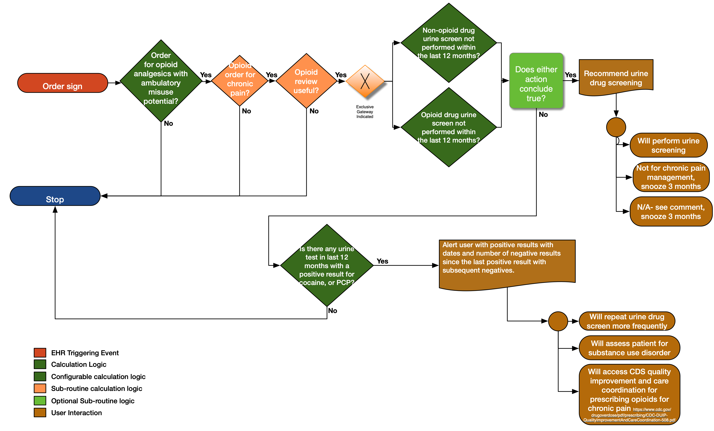

When prescribing opioids for chronic pain, providers should use urine drug testing before starting opioid therapy and consider urine drug testing at least annually to assess for prescribed medications as well as other controlled prescription drugs and illicit drugs (recommendation category: B, evidence type: 4).
The GetDrugNamesFromScreeningCodes(value List<FHIR.Coding>) function extracts the drug name from the display value for the given code. The expectation is that the drug name will be at the beginning of the string and will end with any of the following characters/strings: ‘[‘, ‘tested’, ‘cutoff’. Anything in the string that precedes the first occurrence of any of those characters/strings will be assumed to be the drug name.
The "Missing Opioids" set is identified by comparing the medication code displays with the urine drug screen code's displays - a dependency that implementers should be aware of.
{% include recommendation10-functional-description.html %} 
| Resource | Type | Description |
|---|---|---|
| CDC Opioid Prescribing Guideline Recommendation #10 | PlanDefinition | Event-Condition-Action rule that implements behavior for CDC Opioid Prescribing Guideline Recommendation #10 |
| Opioid Urine Screening Request | ActivityDefinition | ActivityDefinition recommending a Urine Screening (ProcedureRequest) |
| Recommendation #10 - urine drug testing when prescribing opioids for chronic pain | Library | Defines the data requirements to support evaluation of recommendation #10 |